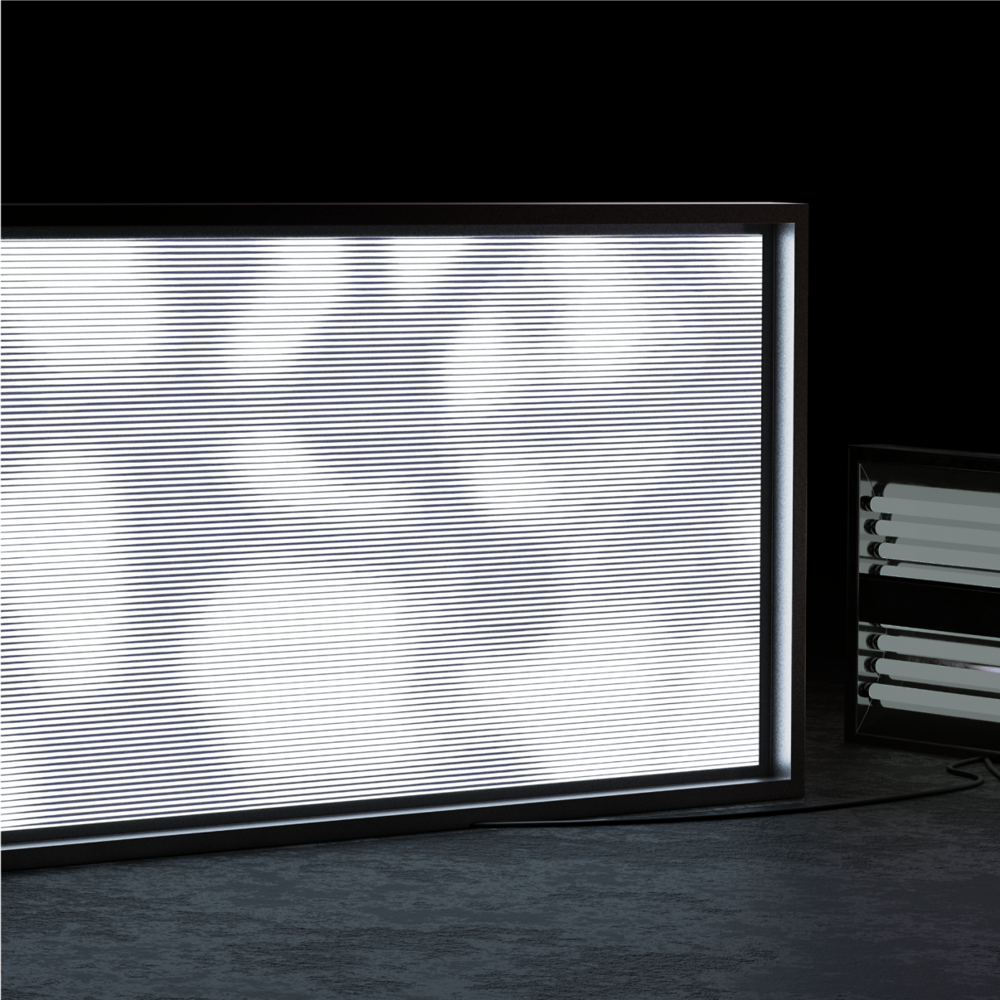
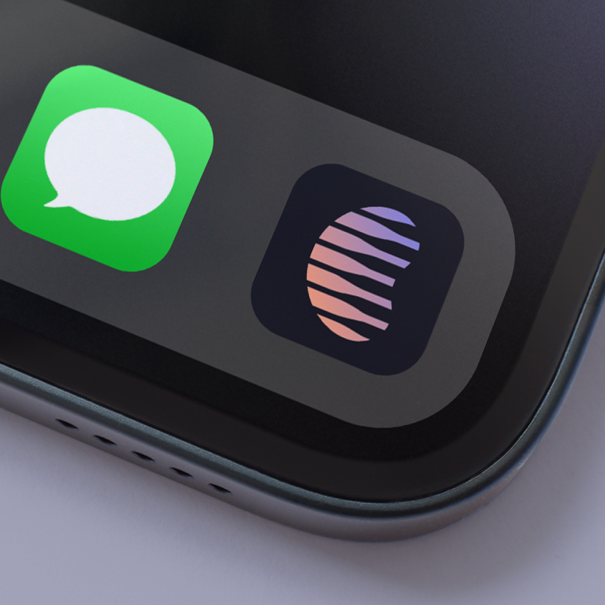
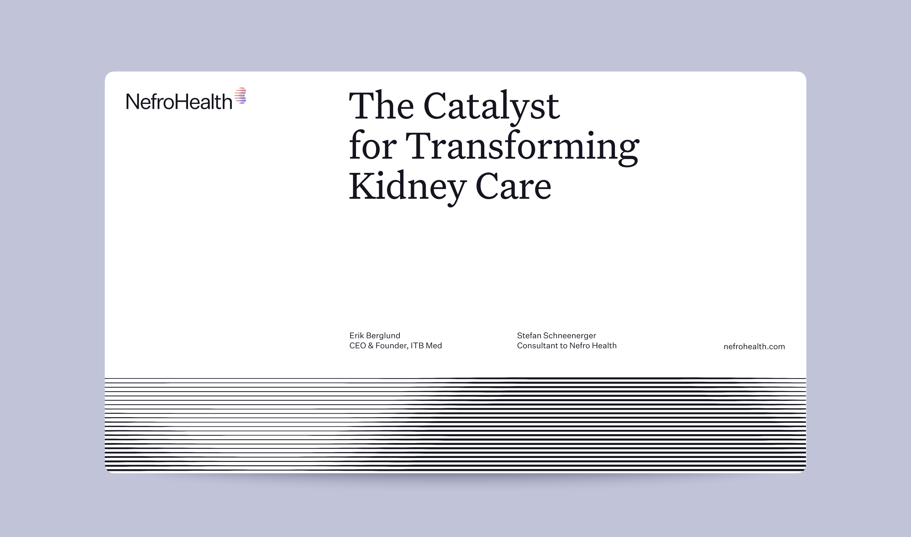
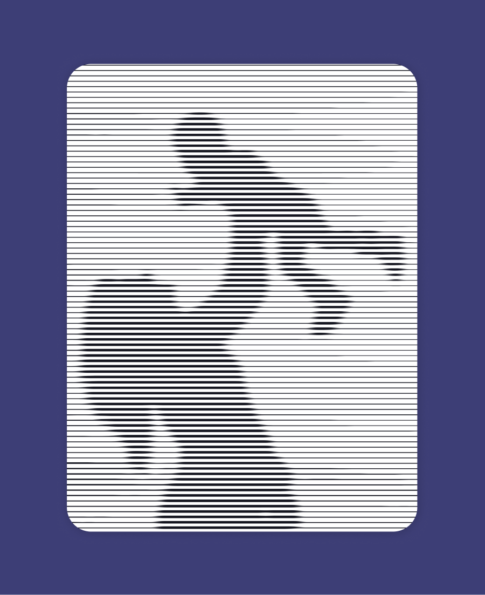
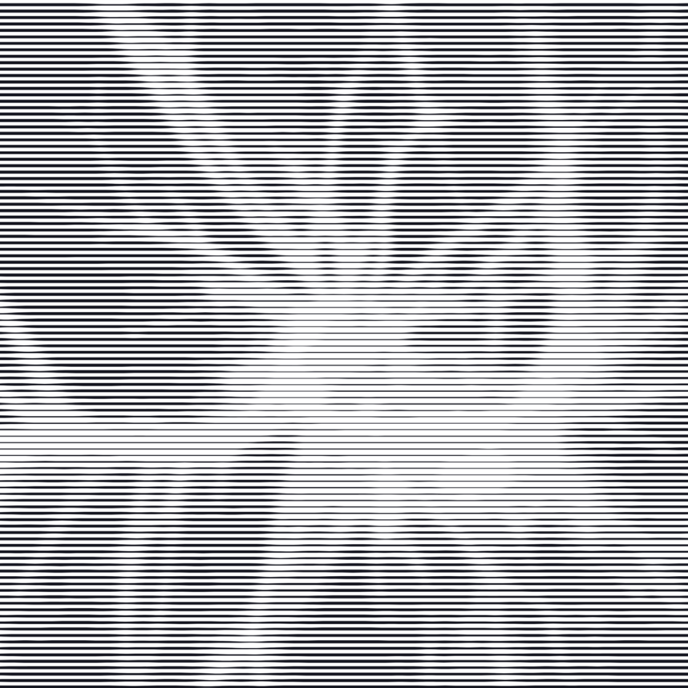
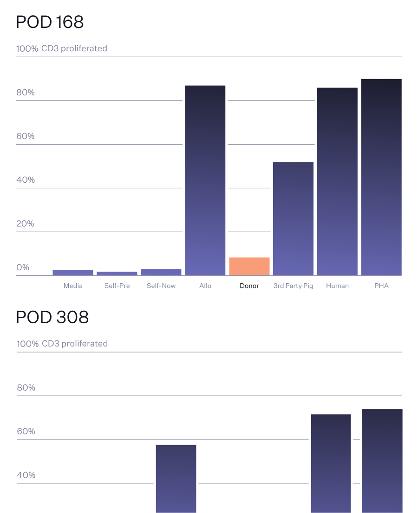
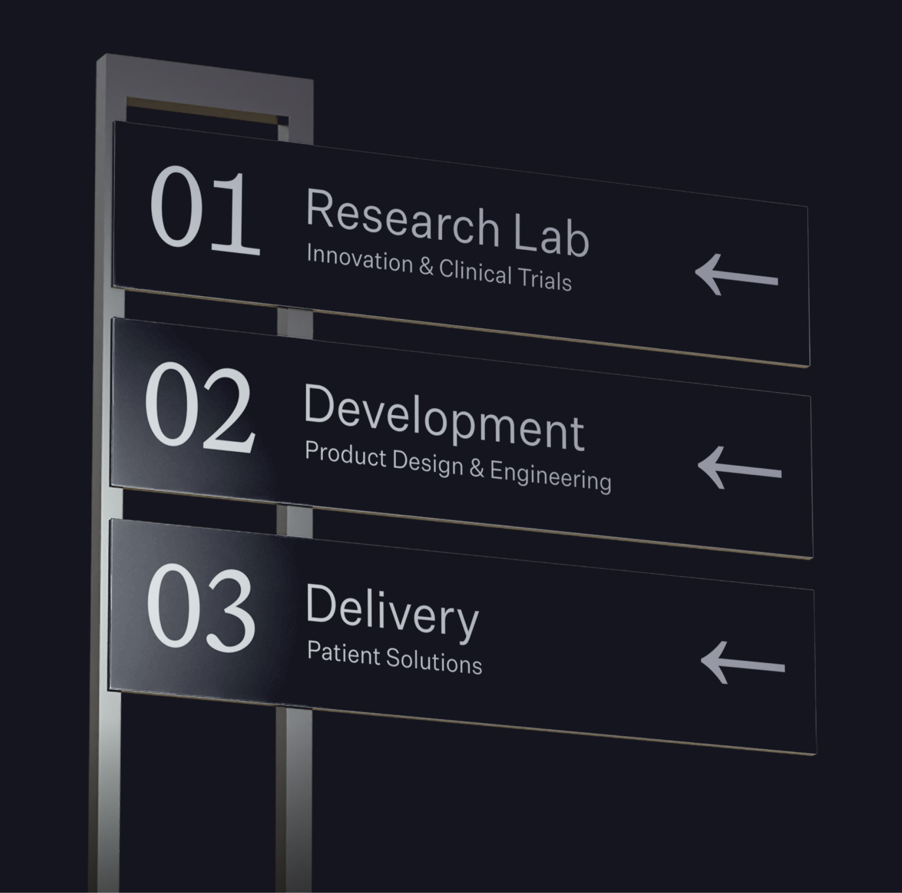
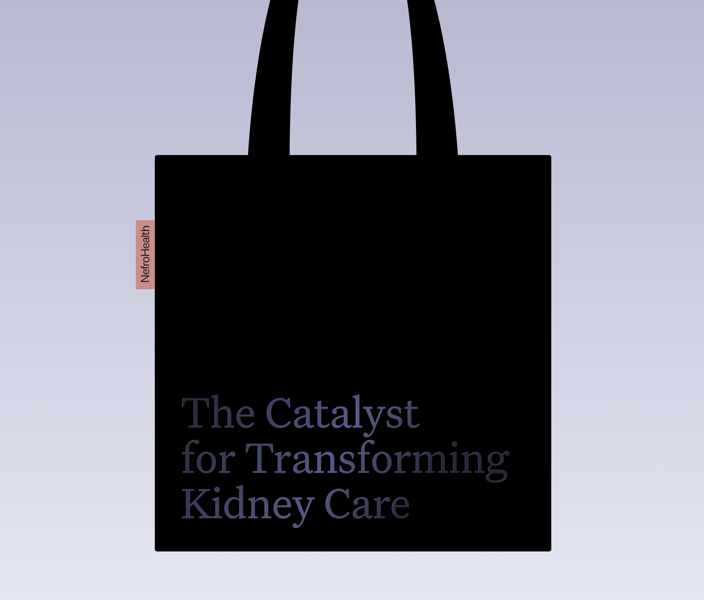
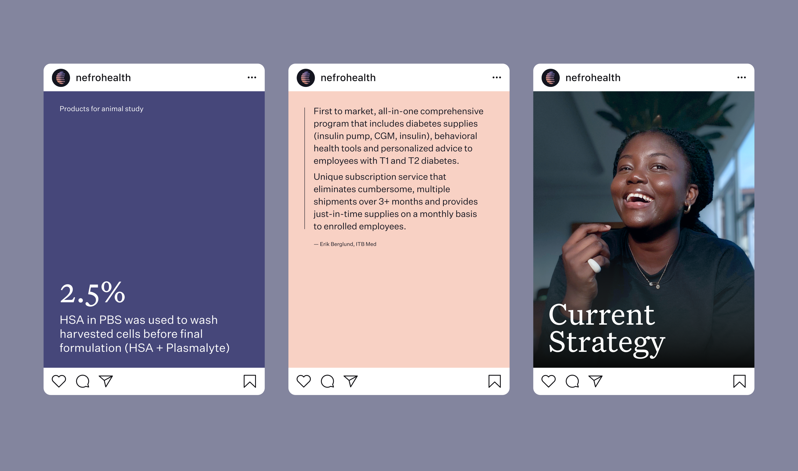

Проект
Айдентика для компании в сфере нефрологии
Описание
Бренд-система для компании в сфере нефрологии: визуальный язык для digital,
презентаций и офлайн-носителей. Фокус на чистой структуре, технологичности и доверии.
Услуги
Бренд-дизайн
Айдентика
Коммуникационные материалы
Айдентика
Коммуникационные материалы
Роль
Бренд-дизайнер
Ссылка
Обсудить








